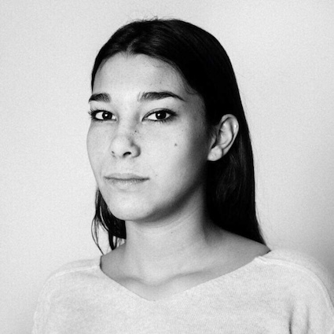

MON PROFIL

Découvrez mon parcours
PROFIL
FORMATIONS ET DIPLÔMES
KEDGE BUSINESS SCHOOL
Master Audit-Expertise Comptable | 2020-2023 à Marseille
UNIVERSITÉ DE NICE - SKEMA
Licence en économie-gestion | 2019-2020 à Paris
ESSCA BUSINESS SCHOOL
Bachelor Management International | 2017-2019 à Paris / Budapest
LYCÉE JACQUES PRÉVERT
Filière Scientifique | 2014-2017 à Boulogne Billancourt
EXPÉRIENCES PROFESSIONNELLES
CONSTELLATION
Stage comptabilité | Janvier-février 2020 à Paris
-
Saisie des écritures comptables
-
Déclarations de TVA et de TVS / DAS2
-
Rapprochement bancaire / Circularisation
INDIGO
Mission | Août 2019 à Paris
-
Saisie de données (pour les bonus écologiques)
BE-COWORKING
Stage | Janvier-février 2018 à Paris
-
Comptabilité: rapprochement bancaire
-
Gestion administrative
-
Accueil téléphonique et physique
ENGAGEMENT ASSOCIATIF
BÉNÉVOLAT
Maison de l'amitié | 2020 à la Défense
-
Distribution du petit-déjeuner aux sans-abris
AFM-Téléthon | 2011-2014 à l'Île de la Réunion
-
Préparation et participation au lancement de l'opération
VOYAGE SOLIDAIRE
Orphelinat | Avril 2016 aux Philippines
-
Encadrement des enfants
-
Aide à la construction d'une annexe
Sans-abris | Octobre 2015 à New-York
-
Accueil des sans-abris
-
Distribution de repas, service en salle